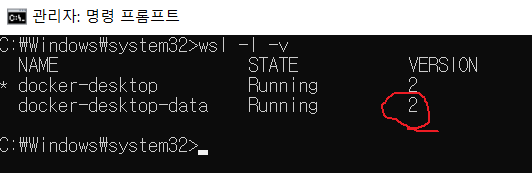
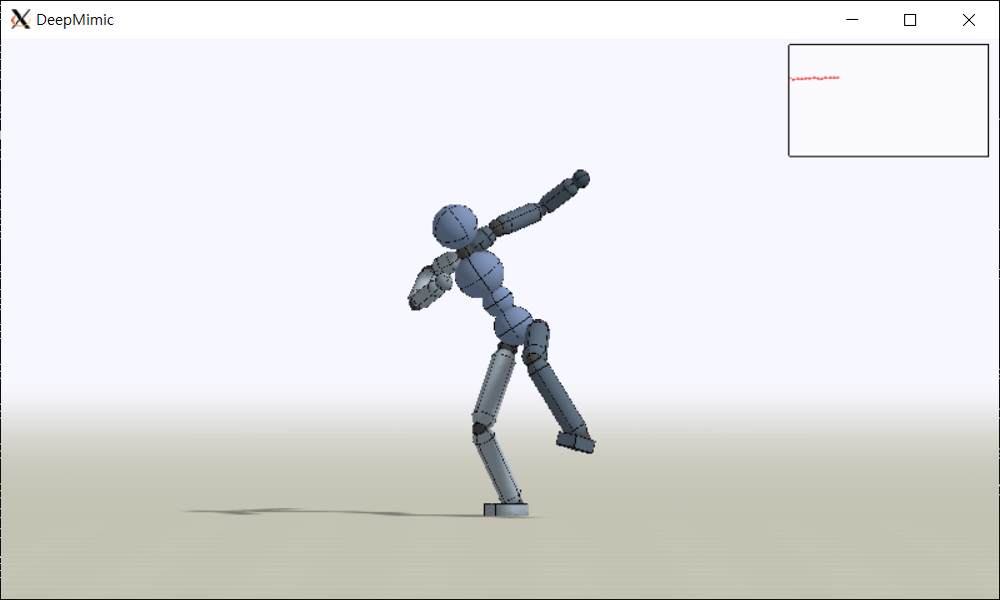

DeepMimic Build Test
======================
Home : https://xbpeng.github.io/projects/DeepMimic/index.html/</br> Code : https://github.com/xbpeng/DeepMimic/</br> Docker : https://hub.docker.com/r/aravindshankar/deepmimic_full_setup/
Install & SetUp in Window10
Docker : https://www.docker.com/get-started/</br> WSL2 : https://docs.microsoft.com/ko-kr/windows/wsl/install-manual/
(command prompt as Administrator)
dism.exe /online /enable-feature /featurename:Microsoft-Windows-Subsystem-Linux /all /norestart
dism.exe /online /enable-feature /featurename:VirtualMachinePlatform /all /norestart
wsl_update_x64.msi download and install
wsl --set-default-version 2
wsl -l -v

if error like bellow
WslRegisterDistribution failed with error: 0x80370102
wsl --install -d Ubuntu
Change OpenGL version
export MESA_GL_VERSION_OVERRIDE=3.2
check : glxinfo | grep "OpenGL version"
Docker Pull
docker pull aravindshankar/deepmimic_full_setup
check : docker images
Docker Run & Attach
docker run -it -p 5920:5920 -p 22:22 -v /tmp/.X11-unix:/tmp/.X11-unix -e DISPLAY=172.27.128.1:0 aravindshankar/deepmimic_full_setup
(DISPLAY=(wsl ip):(xwindow display number))
check : docker ps -a
Run
python DeepMimic.py --arg_file args/run_humanoid3d_spinkick_args.txt

Connect with Visual source code by SSH
SSH install & Start SSH server
apt-get update
apt-get install ssh
service ssh start
ssh setup
nano /etc/ssh/sshd_config
PermitRootLogin yes
StrictModes yes
PubkeyAuthentication yes
service ssh restart